pages-dashboardv3-successdonutlegend--default--mobile.png
329,160 px changed · 100.00%
Generated Sep 29, 2026, 5:12 AM UTC
329,160 px changed · 100.00%
208,388 px changed · 63.31%
11,167 px changed · 1.09%
62,509 px changed · 18.99%
63,646 px changed · 19.34%
89,614 px changed · 8.75%
87,717 px changed · 8.57%
49,380 px changed · 15.00%
64,554 px changed · 6.30%
81,899 px changed · 24.88%
114,397 px changed · 11.17%
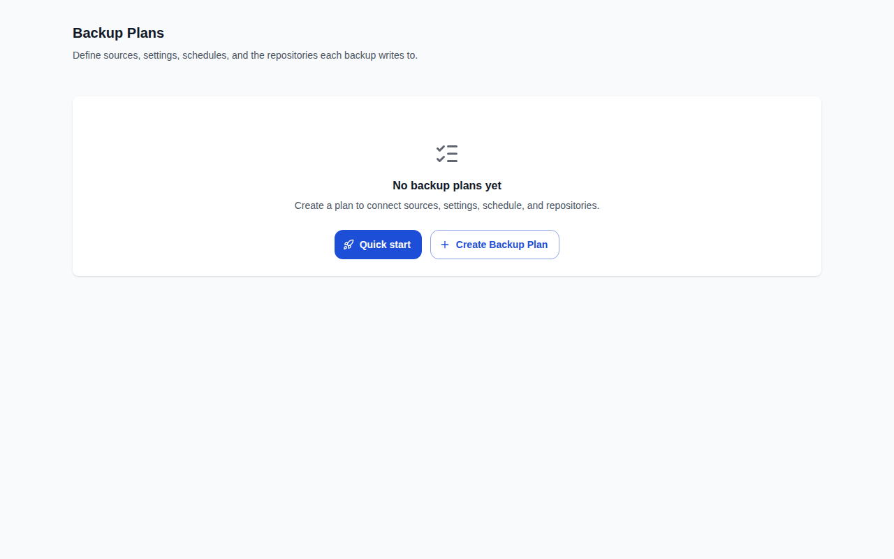
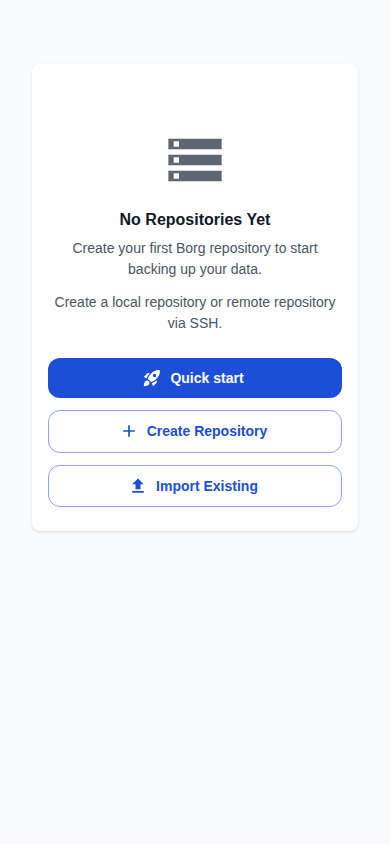
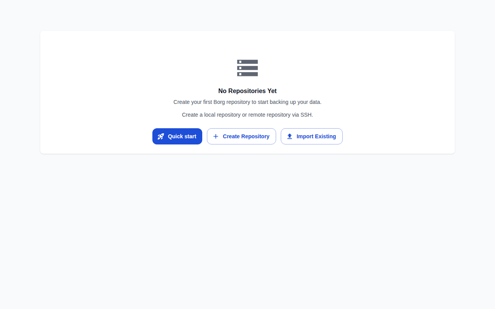
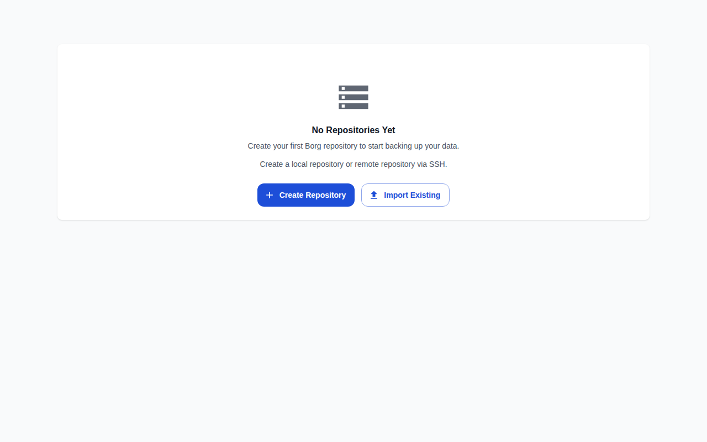
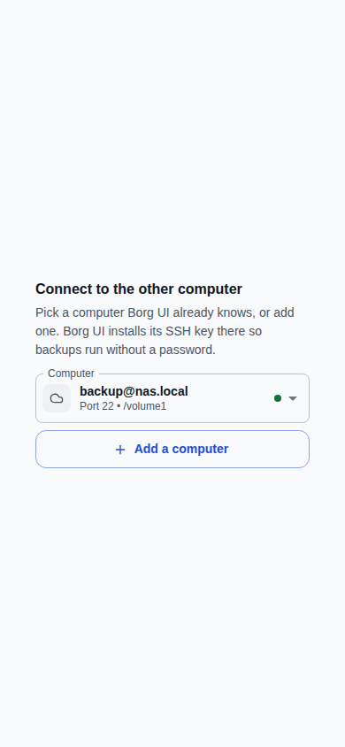
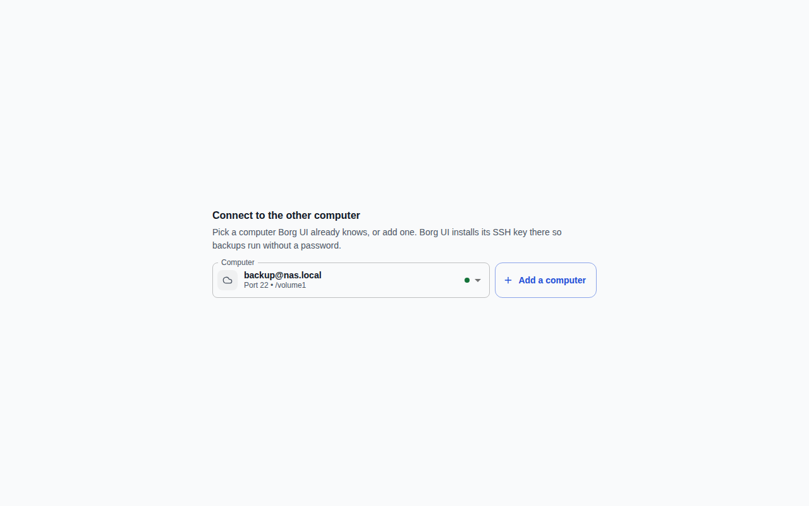
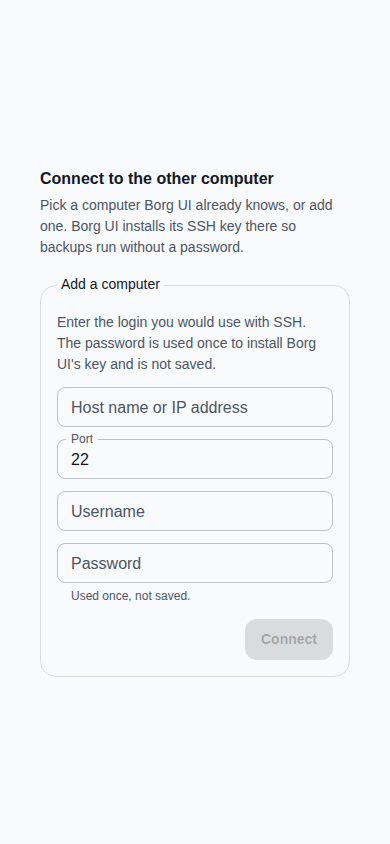
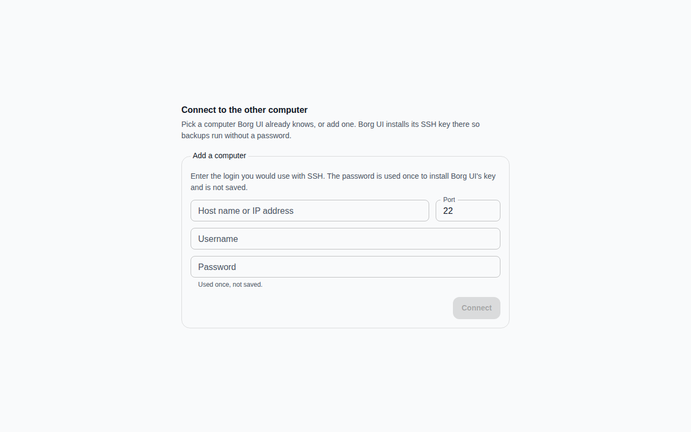
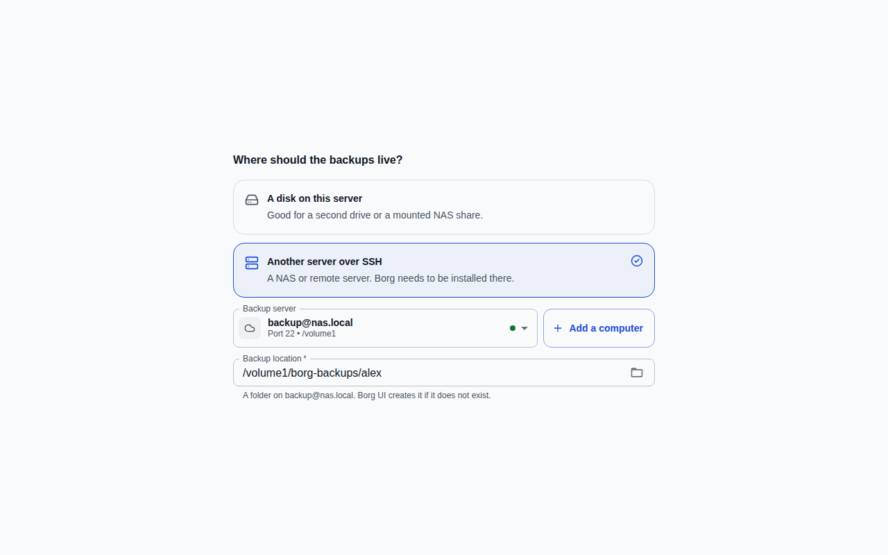
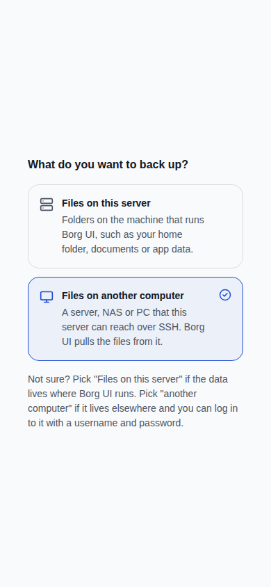
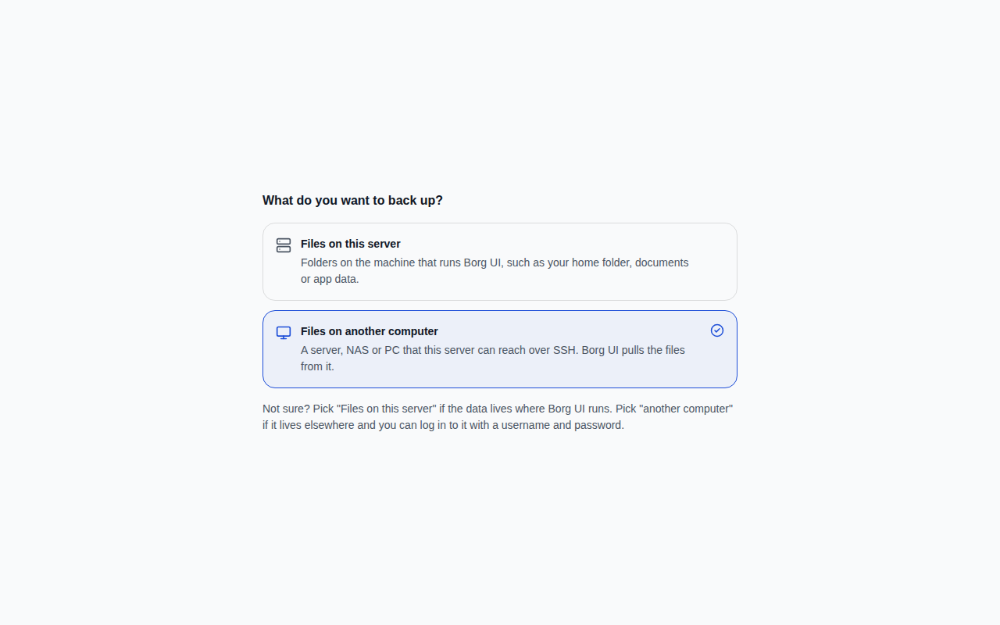
No screenshots were removed.